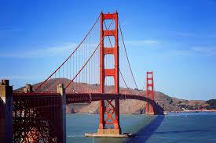
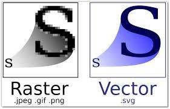

PNG-8 (Portable Network Graphics) растровий формат збереження графічної інформації, що використовує стиснення без втрат.
Область застосування: текст, логотипи, ілюстрації з чіткими межами.
PNG-24 – формат, аналогічний PNG-8, але використовує 24-бітну кольорову палітру.
Область застосування: фотографії, малюнки, що містять прозорі і напівпрозорі ділянки, малюнки з великою кількістю кольорів і чіткими межами зображення.
JPEG (Joint Photographic Experts Group) – популярний формат графічних файлів, який широко застосовується при створенні сайтів і для збереження фотографій. JPEG підтримує 24-бітний колір і зберігає яскравість і відтінки кольорів в фотографіях незмінними. Даний формат використовує стиснення з втратами. Метод стиснення може внести спотворення в зображення (особливо зображення, які містять текст, дрібні деталі або чіткі межі). Формат JPEG не підтримує прозорість.
Область застосування: використовується переважно для фотографій, не дуже підходить для малюнків, що містять прозорі ділянки, дрібні деталі або текст.
GIF (Graphics Interchange Format) — формат, який широко застосовується при створенні анімованих зображень. GIF використовує 8-бітний колір і ефективно стискає суцільні кольорові ділянки, зберігаючи при цьому деталі зображення.
Область застосування: текст, логотипи, ілюстрації з чіткими межами, анімовані малюнки, зображення з прозорими ділянками, банери.

SVG (Scalable Vector Graphics) — векторний формат, зображення в якому складається не з пікселів, а з об’єктів і кривих. Тому не підходить для растрових фотографій, які складаються з точок, але дуже підходить для ілюстрацій, що містять чіткі контури.
Область застосування: текст, логотипи, ілюстрації з чіткими межами.
